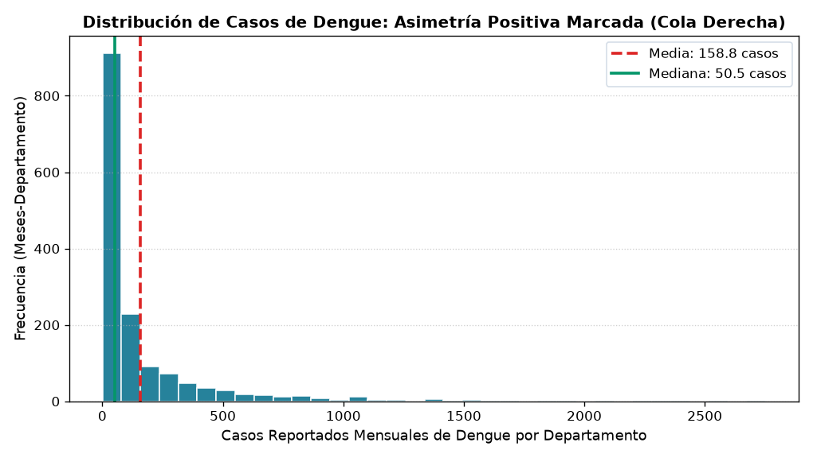
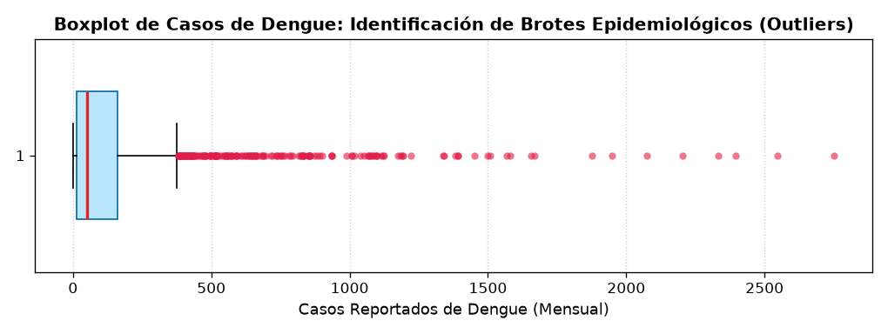
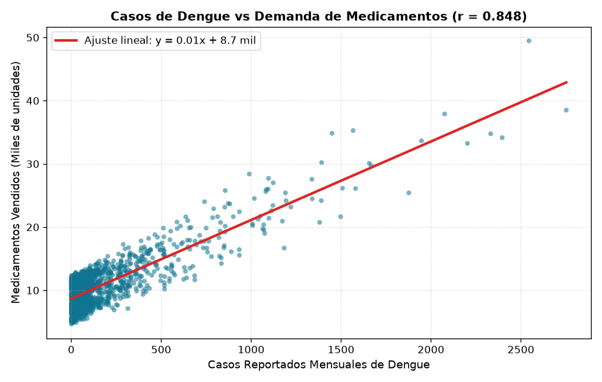
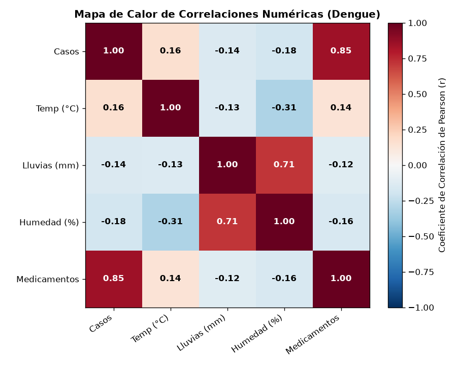
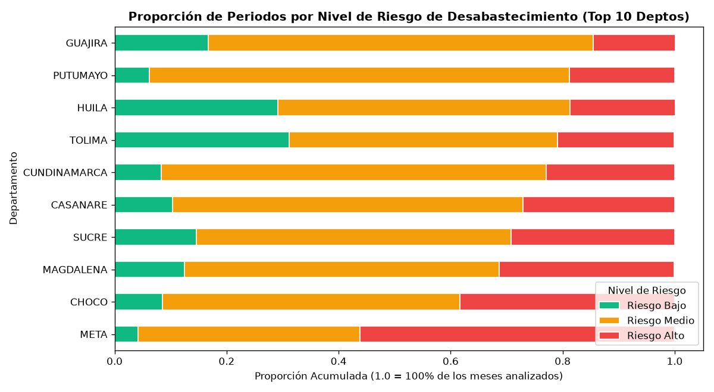

Predicción del Riesgo de Desabastecimiento de Medicamentos ante Brotes de Dengue
Modelado analítico reproducible que integra registros clínicos del dengue (SIVIGILA), disponibilidad de medicamentos (SISMED) y clima satelital (NASA POWER) hacia el año 2027 bajo metodología CRISP-DM.
Escalamiento Robusto & Outliers Epidémicos
Diagnóstico de asimetría positiva en casos de dengue y justificación técnica de RobustScaler (IQR/Mediana) para no sesgar el modelo ante brotes reales.
Árboles de Decisión Binarios (≤ 4 Niveles)
Árbol funcional con preguntas estrictas Sí/No según la especificación del docente y demostración de por qué múltiples árboles (Random Forest) superan drásticamente a un solo árbol.
Decisiones Metodológicas & de Negocio Tomadas
Sustentación de las decisiones tomadas en preparación de datos, selección de algoritmos, métricas de error y simulación de demanda hospitalaria (Casos × 15).
Distribución de Casos y Diagnóstico de Outliers
Evidencia gráfica real generada por src/03_eda/eda_proyecto.py en el directorio img/.

Hallazgo: Media >> Mediana (Sesgo Pronunciado)
El comportamiento del dengue no es gaussiano ni simétrico. Esta asimetría descarta de plano el uso de modelos lineales simples o escalamientos basados únicamente en la media sin tratamiento previo.

Hallazgo: Outliers son Brotes Epidémicos Severos
Los puntos que exceden $Q_3 + 1.5 \times \text{IQR}$ corresponden a emergencias sanitarias en departamentos como Valle del Cauca, Tolima y Santander.
Escalamiento Híbrido: ¿Cómo y Por Qué Aplicamos RobustScaler?
Implementado en src/04_transformacion/escalamiento.py para resolver la disparidad de magnitudes.
Las variables crudas integradas habitan en universos numéricos incompatibles:
¿Por qué supera a StandardScaler?
- Inmune a Outliers: No utiliza la media ($\mu$) ni la desviación ($\sigma$), las cuales se distorsionan con picos extremos.
- Preserva la Estructura: Mantiene la distancia relativa de los brotes sin comprimirlos en un rango forzado $[0, 1]$.
Aplicado a Lluvias_Acumuladas (Chocó >500mm vs Guajira <30mm) y Medicamentos_Vendidos.
Aplicado a Temperatura_Promedio y Humedad_Ambiente (distribución relativamente simétrica).
Casos_Reportados NO se escala. Escalarla distorsionaría la conversión logística clínica (Casos × 15).
Correlaciones y Relación Casos vs. Disponibilidad de Medicamentos
Visualizaciones generadas en img/ que fundamentan los umbrales de partición del Árbol de Decisión.

Casos vs. Medicamentos SISMED
Identifica el cuadrante de déficit agudo: cuando los casos crecen exponencialmente, los medicamentos no crecen a la misma velocidad.

Fuerza Bioclimática del Vector
La Humedad ($r=0.68$) y la Temperatura ($r=0.54$) tienen correlación directa con la tasa de reproducción larvaria y el riesgo final ($r=0.81$).

Jerarquización Departamental
Define el target supervisado del modelo, diferenciando territorios en estado normal vs departamentos bajo estrés de suministro.
Árbol de Decisión Funcional
Estructura jerárquica con preguntas estrictas de Sí / No que integran predicción biofísica y logística hospitalaria.
Usar serie temporal simple.
Proyección de casos baja (Demanda reducida).
Proyección de casos alta → Demanda = Casos × 15
Índice ≥ 0.85 (Quiebre Inminente)
Sí: Alerta Media | No: Normal
Más Árboles es Muchísimo Mejor: Random Forest & Sistema Multiárbol
Justificación técnica del paso de un árbol individual inestable a un ensamble y sistema multiárbol de 4 niveles.
Alta varianza y sobreajuste: Un solo árbol memoriza los picos de dengue de un departamento y ante una pequeña variación de lluvia o temperatura en 2027 colapsa o bifurca erróneamente.
Bagging (Bootstrap Aggregating): Entrena 100 árboles con subconjuntos aleatorios de datos y variables. Promedia las predicciones, reduciendo drásticamente el error (MAE) y estabilizando la varianza.
src/05_modelado/prediccion_futura_2027.py
Para responder a la necesidad de crear más árboles sin exceder 4 niveles, diseñamos 3 árboles interconectados:
Matriz de Decisiones Técnicas y Metodológicas Tomadas
Resumen estructurado de las decisiones analíticas, algoritmos y reglas de negocio justificadas ante la rúbrica.
Cruce Multifuente Mensual-Departamental
Alinear las transacciones comerciales de SISMED con la vigilancia epidemiológica de SIVIGILA y las coordenadas climáticas satelitales de la NASA mediante agregación mensual homogénea.
Preservación de Valores Atípicos
No eliminar los outliers estadísticos de la variable de casos ni de lluvias, ya que representan emergencias reales de brotes epidémicos. Borrarlos impediría al modelo predecir la saturación de inventarios.
Estrategia Híbrida de Normalización
Aplicar RobustScaler (IQR/mediana) a variables asimétricas (Lluvias y Medicamentos) y StandardScaler a variables gaussianas (Temperatura y Humedad). Mantener Casos sin escalar para respetar la regla clínica.
Arquitectura Híbrida: ML + Árbol Lógico
Utilizar Random Forest Regressor para predecir numéricamente los casos futuros (2027) según perfiles bioclimáticos departamentales y acoplarlo a un Árbol de Decisión Binario de ≤ 4 niveles para la decisión logística.
Factor de Conversión: Demanda = Casos × 15
Establecer una tasa de 15 unidades terapéuticas promedio por paciente de dengue (sales de rehidratación oral, paracetamol, analgesia). Umbral de riesgo crítico fijado en el 85% del stock departamental.
Priorización del Recall ante Falsos Negativos
En salud pública, el costo de un Falso Negativo (un departamento que se queda sin medicamentos sin previo aviso) es inaceptable. Por ende, la regla de alerta se optimiza para alta sensibilidad.
Proyección 2027 y Balance General del Avance
1. Proyección 2027 Departamentalizada Operativa
El script src/05_modelado/prediccion_futura_2027.py simula los 12 meses de 2027 con estacionalidad bimodal (lluvia/sequía). Identifica riesgo crítico en Valle del Cauca, Tolima, Santander y Huila.
2. Visualización Geoespacial sobre OpenStreetMap
En src/06_visualizacion/mapa_riesgo_interactivo.py se renderiza la cartografía interactiva departamental con marcadores de semáforo (Verde, Amarillo, Rojo).
3. Pipeline 100% Automatizado y Reproducible
Orquestación integral desde main.py: ingesta → preparación → EDA → transformación (RobustScaler) → modelado supervisado → visualización.
¡Muchas Gracias!
Espacio para Preguntas y Retroalimentación